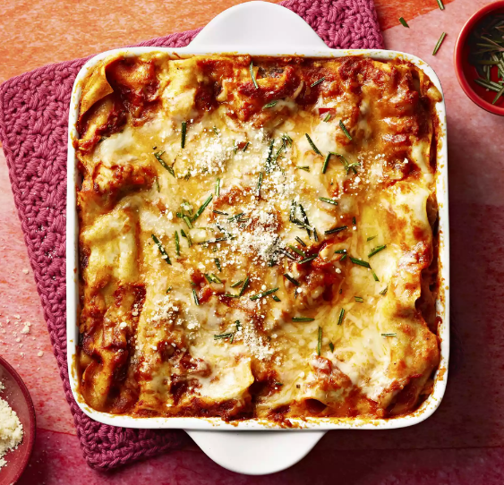

Italian Sausage and Mushroom Lasagna with Bechamel Sauce

Prep Time:
30 mins
Cook Time:
1 hrs 25 mins
Additional Time:
10 mins
Total Time:
2 hrs 5 mins
Servings:
12
Yield:
1 9x13-inch dish
Ingredients
- 1 serving cooking spray
- ½ pound bulk mild Italian sausage
- 3 tablespoons butter
- 3 tablespoons all-purpose flour
- 2 cups low-fat milk
- 1 pinch salt
- 1 pinch ground nutmeg
- 1 egg
- 1 (15 ounce) container part-skim ricotta cheese
- 1 tablespoon dried parsley
- 2 (24 ounce) jars marinara sauce, divided
- 1 (9 ounce) package no-boil lasagna noodles, divided
- 1 cup chopped cremini mushrooms, divided
- 1 (16 ounce) package shredded part-skim mozzarella cheese, divided
- ½ cup grated Parmesan cheese, divided
Steps
- Preheat oven to 375 degrees F (190 degrees C). Spray a 9x13-inch baking dish with cooking spray.
- Place the sausage in a skillet over medium heat and cook until browned and crumbly, about 10 minutes. Drain the sausage and set aside.
- To make bechamel sauce, melt the butter in a saucepan over medium heat and whisk in the flour. Allow the flour and butter to cook until light and foamy, about 2 minutes, whisking constantly; whisk in milk, a little at a time. Whisk in the salt and nutmeg and bring the sauce to a bare simmer, whisking constantly until thickened, about 10 minutes. Remove sauce from the heat and set aside.
- In a bowl, beat the egg and stir in the ricotta cheese and parsley until thoroughly combined.
- To assemble lasagna, pour about 1 1/2 cup of marinara sauce into the bottom of the prepared baking dish and top the sauce with 4 lasagna noodles, overlapping if necessary. On the noodles, layer 1/3 of the ricotta mixture, followed by 1/3 of the cooked sausage, 1/3 cup of mushrooms, 1/4 of the bechamel sauce, 1 cup of the mozzarella cheese, 1/8 cup of the Parmesan cheese and 1 more cup of marinara sauce. Repeat the layers twice more, ending with a final layer of noodles topped with a layer of marinara sauce, bechamel sauce, the remaining mozzarella cheese, and remaining Parmesan cheese. Cover the dish with foil.
- Bake in the preheated oven until bubbly and the noodles are tender, about 1 hour. Remove foil and bake until the top cheese layer is browned, about 5 more minutes. Allow the lasagna to stand for 10 minutes before cutting.